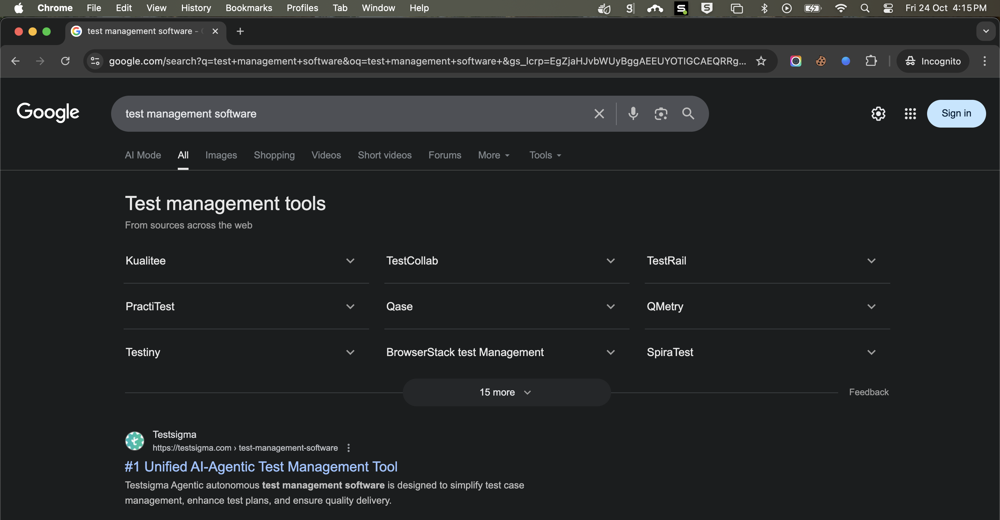
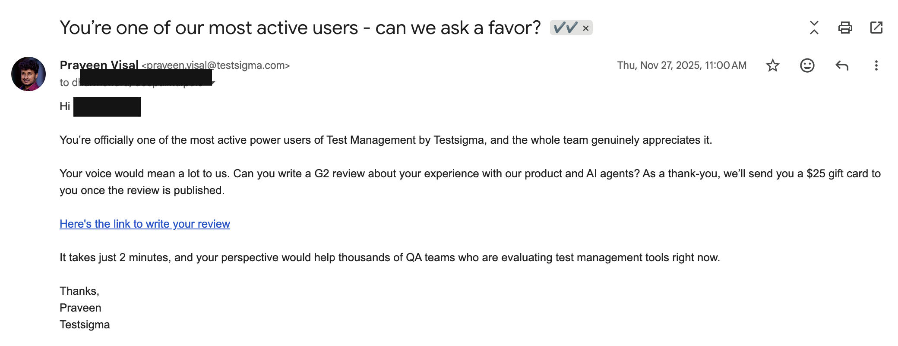
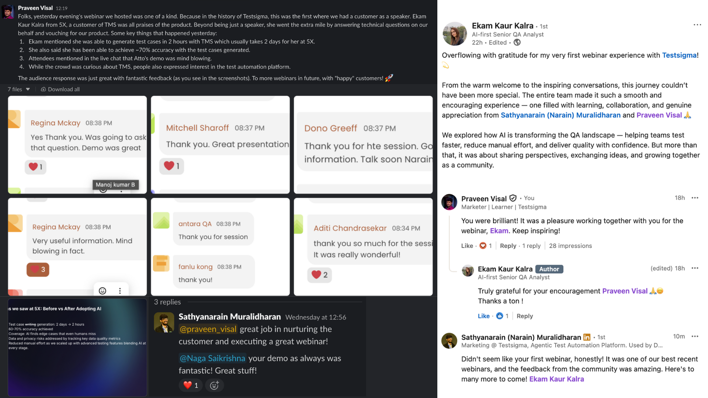
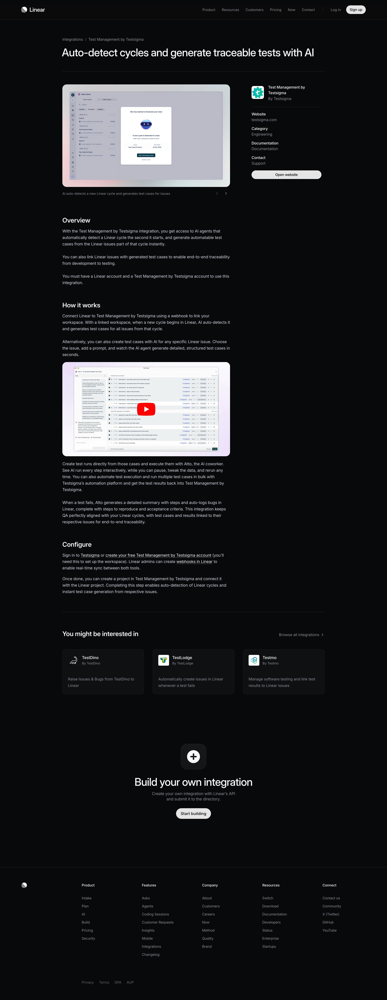

When Testsigma launched Test Management (TMS), there was no dedicated product marketer for it — I took on the function alone, on top of my existing growth remit. Messaging, positioning, paid ads, sales enablement, guerrilla event marketing: all of it, from scratch, with no playbook to inherit.
One of the first priorities was visibility. I ran an SEO and content play on the TMS product page targeting "test management software" — a competitive, high-intent keyword with established players already ranking. The page reached #1 in India and #4 in the US, and has held top-3 a year later.

Testsigma's TMS page ranking #1 for "test management software" — the search that mattered most for this launch.
That ranking wasn't just a vanity metric. It's traced directly to TMS's first enterprise deal — the first proof that this new product could win in the enterprise segment, not just SMB.
I ran a G2 review campaign targeting our most active power users. One of those reviews came from a customer who liked the product enough to say yes to something bigger: becoming Testsigma's first-ever customer-as-speaker on a webinar. Getting a customer to describe your product in their own words, live, to a room of prospects, is worth more than anything I could write for them.

The G2 review outreach that started the relationship. (Customer name redacted.)

The customer-as-speaker webinar that followed — and her own LinkedIn post about it afterward.
As PMM, I also built and shipped the integration page for Test Management by Testsigma on Linear's own website — third-party validation I didn't have to write myself. That placement led to a direct recommendation from Linear's team into a Fortune 500 enterprise account, now an active opportunity in our pipeline.

The Test Management by Testsigma integration, live on Linear's own site.
"I had the opportunity to work with Praveen on the couple of website product pages and content initiatives that gained visibility in AI/Answer Engine results. He has a strong growth marketing mindset with excellent expertise in CRO and content optimization. His ability to connect user behavior, content, and business goals really stands out."